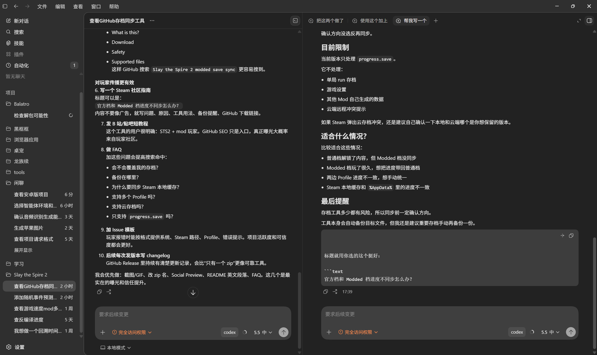

普通档与 Modded 档对比
扫描 %AppData%\SlayTheSpire2\steam\<steamId> 下的 profile1-3，并展示两侧进度摘要。
手动同步 Slay the Spire 2 官方档与 Modded 档的 progress.save，适合普通档和 Modded 档进度不一致时使用。

工具只处理进度存档，不修改游戏本体、mod、联机协议或官方存档结构。
扫描 %AppData%\SlayTheSpire2\steam\<steamId> 下的 profile1-3，并展示两侧进度摘要。
工具不会自动判断哪边更新，也不会自动覆盖。你明确点击“同步到 Modded”或“同步到普通档”。
同步 progress.save 的同时更新 Steam 本地缓存镜像和 remotecache.vdf 元数据。
建议关闭游戏后再同步，避免游戏运行中写回旧存档。同步前会自动备份目标侧旧文件。
%AppData%\SlayTheSpire2\save_sync_tool\backups
当前版本只处理 progress.save，并同步对应 backup、Steam cache 和 remotecache 元数据。
Windows 桌面程序，当前发布包依赖 .NET 8 Desktop Runtime。
不会。你需要手动选择同步方向，并且工具会在写入前备份目标侧文件。
支持。工具会扫描所选 Steam 账号下的 profile1、profile2 和 profile3。
不会。它只处理 progress.save 和相关本地缓存元数据。
Steam 云可能会参考本地缓存元数据。同步缓存镜像和 remotecache.vdf 可以降低旧缓存回写导致的冲突。